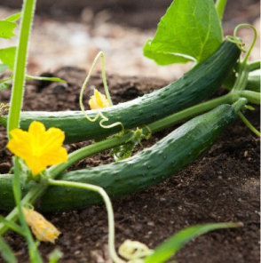

PLANER
HISTORIK
TIPS
LOGGA UT
Mina sidor
Lägg till ny plantering
Planta:
Datum:
LÄGG TILL
Dina planerade planteringar

Gurka
15 april 2024
Rico Coolio
Ta bort
Dina planterade planteringar
Tomat
1 april 2024
Majvor och P-Å
Ta bort
Sockerärta
15 april 2024
Frippe
Ta bort
Till toppen av sidan
Tillbaka till Start